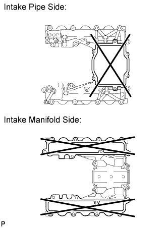

INTAKE MANIFOLD > INSPECTION |
| 1. INSPECT NO. 1 INTAKE MANIFOLD FOR FLATNESS |
 |
Using a precision straightedge and feeler gauge, measure the warpage of the contact surface between the No. 1 and No. 3 intake manifold, and the No. 1 intake manifold and cylinder head.
| Item | Specified Condition |
| No. 3 intake manifold | 0.10 mm (0.00394 in.) |
| Cylinder head | 0.10 mm (0.00394 in.) |
| 2. INSPECT NO. 2 INTAKE MANIFOLD FOR FLATNESS |
|
Using a precision straightedge and feeler gauge, measure the warpage of the contact surface between the No. 2 and No. 3 intake manifold, and the No. 2 intake manifold and cylinder head.
| Item | Specified Condition |
| No. 3 intake manifold | 0.10 mm (0.00394 in.) |
| Cylinder head | 0.10 mm (0.00394 in.) |
| 3. INSPECT NO. 3 INTAKE MANIFOLD FOR FLATNESS |
 |
Using a precision straightedge and feeler gauge, measure the warpage of the contact surface between the No. 3 and No. 1 intake manifold, the No. 3 and No. 2 intake manifold, and the No. 3 intake manifold and intake pipe.
| Item | Specified Condition |
| Intake pipe | 0.10 mm (0.00394 in.) |
| No. 2 and No. 3 intake manifold | 0.15 mm (0.00591 in.) |